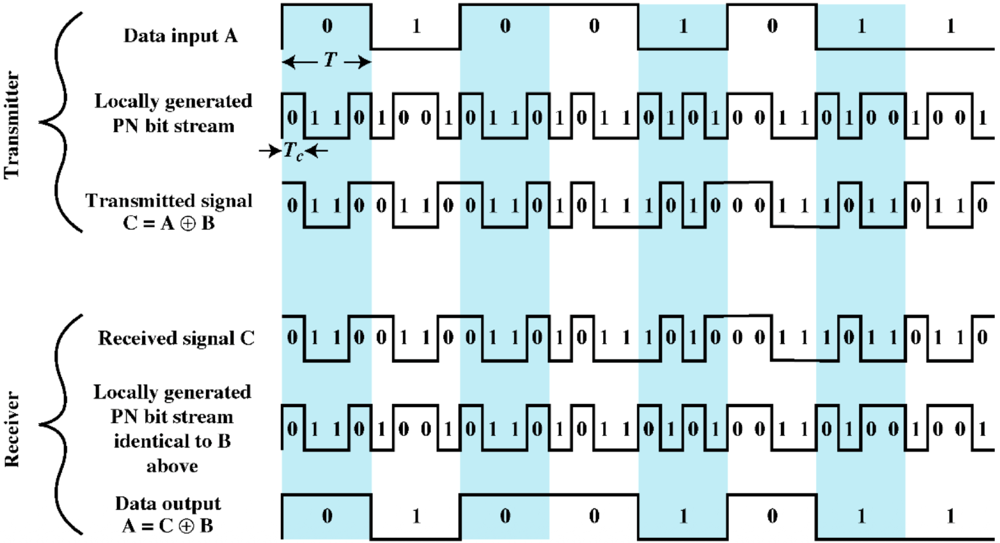
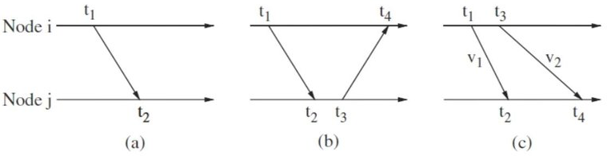

WSN Crash Course 无线传感器网络速成笔记
1 PHY (Physical Layer) 物理层
物理层负责决定信号具体以什么方式存在以及频率、电压等参数.
- Wireless medium 无线传输介质
- Radio Frequencies (RF) (使用最多, 本篇只关注这个)
- \(3 \text{ Hz to } 300\text{ GHz}\)
- ISM (Industrial, Scientific, and Medical) bands: RF 频段中为工业、科研、医疗保留的频段, 用户可以无需许可证在功率范围内自由使用.
- Main techs:
- Narrowband 窄带
- Spread Spectrum 扩频
- Ultra-Wideband (UWB) 超宽带
- Optical
- Acoustic
- Magnetic Induction Techniques
- Radio Frequencies (RF) (使用最多, 本篇只关注这个)
1.1 Spread Spectrum 扩频
DSSS 直接序列扩频 (Direct Sequence Spread Spectrum)
- DSSS 通过将原始二进制信息 (Baseband) 异或上一串快速变化的 PN chip (见 Figure 1) 来提高基带带宽 (因为时域变化更快, 频域带宽会更宽).
- PN chip 比特率高于原始信号比特率!
- PN chip (Pseudo-Noise chip) sequence 伪随机码片, TX/RX 会产生相同的 PN 序列来进行扩频和解扩.
- 只有知道 PN 序列的 RX 才能正确解扩.
Figure 1: DSSS 示意图 (中间调制的过程忽略了) [1] - DSSS 通过将原始二进制信息 (Baseband) 异或上一串快速变化的 PN chip (见 Figure 1) 来提高基带带宽 (因为时域变化更快, 频域带宽会更宽).

FHSS 频率跳变扩频 (Frequency Hopping Spread Spectrum)


1.2 UWB (Ultra-Wideband) 超宽带
- Motivation: UWB 采用完全不同的路线, 它不用载波, 直接在时间轴上发送非常短的脉冲 (ns 级别), 自然地由 Fourier 变换知, 这种短脉冲在频域上会有非常宽的带宽! 由于无需维持稳定的高频载波, UWB 传输功耗非常低.
- 但是 UWB 的传输距离 \(<10 \text{ m}\).
2 Data Link Layer 数据链路层
2.1 LLC (Logical Link Control) 逻辑链路控制
LLC 提供统一接口给网络层.
- Frame management 帧管理
- Byte Count 字节计数: 在帧头部存储帧的字节数.
- 问题: 若字节数出错, 则会 **out of sync.
- Flag Bytes + Byte Stuffing 标志字节 + 转义符: 为了解决 frame 之间的同步 (分割) 问题, 在每个 frame 的头尾添加特殊的 flag byte (如 0b01111110). 若这个 flag byte 出现在 frame 内部, 则在它前面添加一个转义符 (ESC, escape byte). 若 ESC 本身出现在 frame 内部, 则也在它前面添加一个 ESC.
- Byte Count 字节计数: 在帧头部存储帧的字节数.
2.2 MAC (Medium Access Control) 介质访问控制
MAC 子层非常接近物理层, 控制物理层什么时候发、发多久.
- Broadcast channel 广播信道 (Multiaccess channel / random access channel)
- 在一个广播信道上, 同一时间、同一频段、同一空间接收点只能有一个节点发送数据, 否则会发生碰撞 (collision).
- MAC Protocol: 用来控制物理层什么时候发、发多久的协议.
- Contention-free 非竞争型
- Static channel allocation 静态信道分配: FDMA (每个人固定分配一个频段), TDMA (每个人固定分配一个时间片), CDMA (每个人固定分配一个信号空间的方向).
- Dynamic channel allocation 动态信道分配: Polling 轮询, Token Passing 令牌传递, Reservation 预约.
- Contention-based 竞争型
- ALOHA: 想发就发, 撞了重来.
- CSMA (Carrier Sense Multiple Access) 载波监听多路访问: 先听一听, 没人说话再发.
- MACA (Multiple Access with Collision Avoidance) 多路访问与碰撞避免: 先举手再说话.
- MACAW (MACA with ACK) 带确认的多路访问与碰撞避免: 先举手再说话, 说完还要等确认 (MACA 的改进版).
- Contention-free 非竞争型
3 Network Layer 网络层
Routing Protocols 路由算法
Routing metrics 路由指标 (见 Figure 6)
- (Min) Number of hops 跳数: (relay node 指中继节点的个数 (不算 source 和 sink)).
- (Min) Energy consumption (per packet) 能量消耗: 每条链路上的能量消耗加起来即可.
- (Max) Average energy capacity 平均能量容量: relay node 上剩余能量的平均值.
- (Max) Minimum energy capacity 最小能量容量: relay node 上剩余能量的最小值 (要尽可能大).
- (Min) Latency 延迟: 每条链路上的延迟加起来即可.
- (Max) Time to network partition 网络分裂时间: 由于 WSN 中节点由电池供电, 当确定一种路由算法时, 节点上的数值 (电量) 会逐渐消耗, 直到网络中存在两个节点无法通信 (网络分裂). 网络分裂时间越长越好.
Hierarchical routing

4 Localization 定位
「温度传感器报告 \(80 ^\circ \text{C}\)」 是没有意义的, 「在 A 区域第 3 号设备旁」 才有意义.
4.1 Range-based 依赖距离测量
- Ranging techniques 测距技术
- RSS (Received Signal Strength) 接收信号强度: 在已知 path-loss model 的情况下, 可通过比较接收信号强度与发射信号强度来估计距离. 如果不是 LoS (对着发), 误差会很大.
- ToA (Time of Arrival) 到达时间: 利用初中物理 路程 = 光速 × 时间, 知道时间即可算出距离.
- TDoA (Time Difference of Arrival) 到达时间差: 不需要 sync! 如 Figure 7 (c), \(t_1\) 发 RF, \(t_3\) 发 sound, 则距离 \[d = (v_1-v_2) \cdot ((t_4-t_2) - (t_3-t_1))\]
Figure 7: (a) One-way ToA; (b) Two-way ToA; (c) TDoA [3] - AoA (Angle of Arrival) 到达角度: 单看角度当然不能知道距离, 需要多个节点测量同一个 TX 的 AoA 来三角定位 (Triangulation). 计算相对复杂.
- Range-based protocols
- Triangulation 三角测量: 见 Figure 8, 两个 anchor node \(A, B\) 相对位置已知, 再测量两个角度即可.
- Trilateration 三边测量: 见 Figure 9, 三个球相交于一点. GPS 的工作原理 (只不过 GPS 需要 \(4\) 个卫星来同时解出时间偏移).
- Iterative multilateration 迭代多边测量: 在一个 WSN 系统中, 先用人工或 GPS 确定少量几个 anchor node 相对位置, 然后用 Trilateration 算出其他 node 位置, 这些 node 就变成新的 anchor node … (这种方法会有 Error propagation 问题, 但仍在使用).
- Collaborative multilateration 协同多边测量: 一个 node 附近不一定会有 \(3\) 个 anchor node, 所有 node 都可以用 Trilateration 开始测量周围的 node 位置, 然后用一些复杂的优化算法来算出所有 node 位置 (更准确).

4.2 Range-free 不依赖距离测量
4.3 Localization style
Periodic: 周期性地对所有节点进行定位.
Event-driven: 只有当某个感知事件发生时, 相关节点才触发定位过程.
5 Synchronization 同步
节点 \(A,B\) 的时钟是同步的意思是: 在非狭义相对论的范围内,「12:20」这个时间戳对于 \(A,B\) 节点没有歧义.
- 一些概念:
- Clock offset: 路程差.「快了 20 s」
- Clock rate: 速率. 1 s 内这个时钟实际只走了 0.9 s (clock rate = 0.9).
- Clock skew: 速率差. 两个时钟的 Clock rates difference.
- Drift rate: 加速度. 一个时钟时快时慢的程度.
- Challenges:
- Environmental effects: 天太冷影响同步.
- Energy constraints: 电池没电钟走慢了.
- Wireless medium and mobility: ACK 信号丢包了.
- Sync methods 同步方法
- One-way sync 单向同步: Node \(A\) 将发送时刻的时间戳 \(t_1\) 附加在消息中发送给 Node \(B\), 传播时间 \(D\) 很小 (一般忽略或设为常数), \(B\) 在 \(t_2\) 收到. 如果 \(t_2\) 和 \(t_1 + D\) 有差异, 则这个差异就是 clock offset \(\delta\).
- Two-way sync 双向同步
- Receiver-receiver sync
6 Security in WSNs
- CIA Model
- Components:
- Confidentiality 机密性: 不该看到的人, 看不到数据.
- Integrity 完整性: 数据在传输过程中不被篡改.
- Availability 可用性: 正常工作的概率.
- 在不同的场景中, 这三者的重要性不同.
- 火灾检测: IA > C
- 机场生物识别信息收集: CI > A
- Components:
7 Queuing Theory 排队论
连续时间 Bernoulli 过程 \(\iff\) 单位时间到达人数 \(\sim \operatorname{Pois} (\lambda) \iff\) 相邻两次到达时间间隔 \(\sim \operatorname{Exp} (\lambda)\).
离散时间 Bernoulli 过程 \(\iff\) 单位时间到达人数 \(\sim B(n,p) \iff\) 相邻两次到达时间间隔 \(\sim G(p)\).
- 几何分布是负二项分布的特殊情况: \(G(p) \iff NB(1, p)\).
7.1 Kendall’s Notation
\[ A/S/C/K/N/D \]
\(A\): Arrival model 到达模型, 可选:
- \(M\): Memoryless (Poisson process).
- \(E_k\): Erlang distribution (Sum of k i.i.d. exponential R.V.).
- \(G\): General distribution.
\(S\): Service model 服务模型, 可选同上.
\(C\): Number of parallel servers 并行服务器数量 (\(\neq\) number of queues).
\(K\): Capacity of queue 队列容量 (maximum number of people allowed in each queue), 可选:
- Finite.
- Infinite (\(\infty\)).
\(N\): Capacity of calling population (队里的人从哪里来的, 如果是有限的则会影响 arrival rate), 可选同上.
\(D\): Service discipline 服务纪律, 可选:
- FIFO/FCFS: First In (Come), First Out (Serve).
- LIFO/LCFS: Last In (Come), First Out (Serve).
- SIRO: Serve In Random Order.
- PQ: Priority Queueing.
7.2 Examples
7.3 Notation of Parameters
- cust.: customer.
- \(\lambda\): Mean arrival rate, \(\mathbb{E} (\# \text{cust. arrived})\) per unit time.
- \(\mu\): Mean service rate, \(\mathbb{E} (\# \text{cust. served})\) per unit time.
- \(\rho := \lambda / (C \mu)\): Utilization factor / Traffic intensity.
- \(n\): \(\# \text{cust.}\) in the:
- system: \(n_s\).
- queue: \(n_q\).
- \(\mathbb{P}_n(t)\): Probability of having \(n\) customers in the system at time \(t\).
- Write \(\pi_n \equiv \mathbb{P}_n (\infty)\), 平稳后 system 中有 \(n\) 个 cust. 的概率.
- \(W\): \(\mathbb{E}(\text{waiting time})\) per cust. in the:
- system: \(W_s\) (见 Equation 2).
- queue: \(W_q\) (见 Equation 2).
- \(L\): \(\mathbb{E}(\# \text{cust.})\) in the:
- system: \(L_s\) (见 Equation 1).
- queue: \(L_q\) (见 Equation 2).
7.4 \(M / M / 1 / \infty / \infty / \text{FIFO}\) Queue 生灭过程
cust. 到达和离开可以代表生命的诞生和死亡, 因此这种排队过程也叫生灭过程 (birth-death process).
7.4.1 系统中的稳态人数为几何分布
这是一切生灭过程结论的起点!
1 加一的原因是: 几何分布从 \(1\) 开始, 而 \(\pi\) 的取值从 \(0\) 开始.
- 并且这是一个全局稳定解, 即最终 system 中的分布与队中的初始人数无关!! (可理解为 \(\begin{bmatrix} \pi_0 \\ \pi_1 \\ \pi_2 \\ \vdots \end{bmatrix}\) 为无穷维相空间中的吸引子).
7.4.2 Expectation Space (ES)
这是生灭过程剩余所有结论的直接诱导思想!
- ES 基本思想和局限性:
- 对于任何随机过程, 很多时候可以将随机性忽略, 让考虑所有量都按照期望稳定存在的 mental picture. 由于没有找到已知的合适的名词, 我们姑且将此称为 Expectation Space 吧.
- Advantage: ES 可以让很多结论变得显然.
- Limitation: 对于生灭过程, 若 \(\lambda < \mu\), 若想象成水按速率 \(\lambda\) 流入管道, 流出速率最大值可达 \(\mu\), 则管道里永远也不会留下水, 而后面我们会知道实际上管道里平均来说会留下 \(L_s = \rho / (1-\rho)\) 的水量. 这是因为 cust. 到达和离开是随机的, 有可能一小段时间内有很多 cust. 到达而处理时间又比较长, 这样管道里就会积累一些水.
Theorem 2 由 Figure 12:

结合 Corollary 1 显然有:
\[ \begin{aligned} L_s = \lambda W_s &\implies \boxed{W_s = \frac{L_s}{\lambda} = \frac{1}{\mu-\lambda}} \\ W_s - W_q = \frac{1}{\mu} &\implies \boxed{W_q = W_s - \frac{1}{\mu} = \frac{\rho}{\mu - \lambda}} \\ L_q = \lambda W_q &\implies \boxed{L_q = \frac{\rho^2}{1-\rho}}. \end{aligned} \tag{2}\]